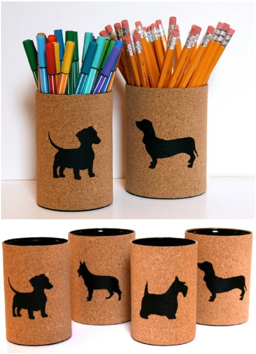

DIY Ideas for Metal Recylables
1. Cookie Cutters
Tools Needed:
- Aluminum can
- Sissor
- Shape templates
Instructions:
- Cut out the 2D shape of the cookie cutter from the aluminum can
- Adjust the aluminum to the desire shape
2. Pencil Holder

Tools Needed:
- Aluminum can
- Sissor
- Pattern papers or construction papers
- Glue or tape
Instructions:
- Wrap the pattern paper or construction paper around the can and measure its size
- Cut the paper
- Glue or tape the paper onto the can and add some addition decoration that you'd like
3. Tin Flowers
Tools Needed:
- Tin can
- Color sprays or paint
- Sissor
Instructions:
- Cut the can in half and use the round surface as the base of the flower
- Cut the excess aluminums in strips as appeared in the image
- Spray color paints on the flowers